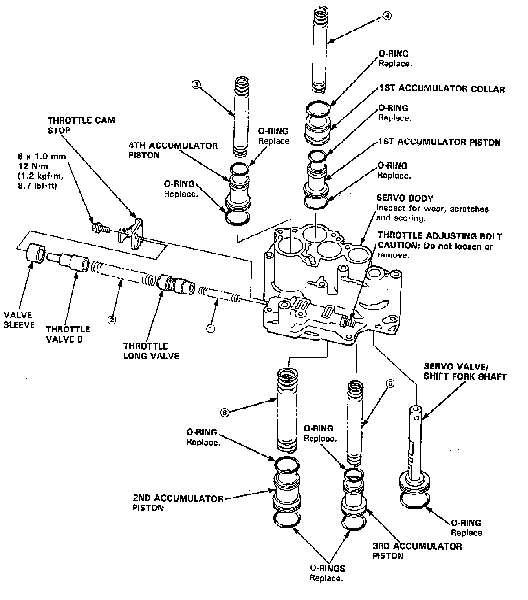
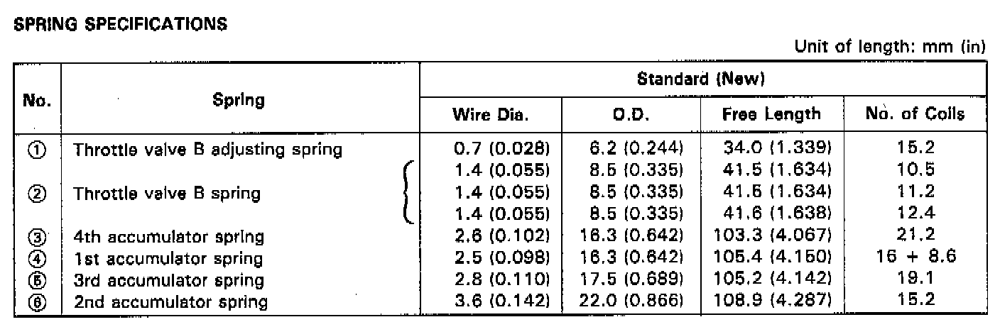

Servo Body


NOTE:
- Clean all parts thoroughly in solvent or carburetor cleaner, and dry with compressed air.
- Blow out all passages.
- Replace valve body as an assembly if any parts are worn or damaged.
- Coat all parts with ATF before reassembly.
- Replace the O-rings.